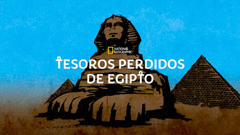
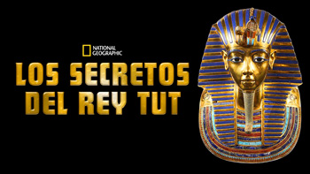
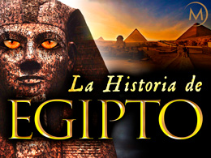

Último hallazgo
El descubrimiento de una ciudad de 3.000 años de antigüedad que se perdió en las arenas de Egipto ha sido calificado como uno de los hallazgos arqueológicos más importantes desde la tumba de Tutankamón.
El conocido egiptólogo Zahi Hawass anunció el jueves el descubrimiento de la "ciudad dorada perdida" cerca de Luxor. Declaró que es la ciudad más grande de la antigüedad que se ha descubierto en Egipto.
Conocida como Aten, fue desenterrada en septiembre de 2020, poco después de empezar la excavación. La ciudad data del reinado de Amenhotep III, uno de los faraones más poderosos de Egipto, que gobernó desde 1391 hasta 1353 a.C.
Hawas explicó que "muchas misiones extranjeras habían buscado esta ciudad y no la habían encontrado"
y, según el Ministerio de Antigüedades,
"las capas arqueológicas han permanecido intactas durante miles de años, como si sus antiguos residentes las hubieran dejado ayer mismo".
¡Aquí te dejo un video para que conozcas más sobre el tema!
Descubrí curiosidades nuevas a través de estas series documentales:
Tesoros Perdidos de Egipto
Es una serie de National Geographic atrapante y basada en descubrimientos que sigue a un equipo de arqueólogos en Egipto.
Los Secretos del Rey Tut
Otra docuserie de National Geographic que revela los secretos y nos cuenta la historia de Tutankamón.
La Historia de Egipto
Es acerca de las historias épicas que giran en torno a esta sociedad en evolución de inventores, héroes, heroínas, villanos, artesanos, pioneros y los grandes faraones. ¡Actualmente, la poder ver en Amazon Prime!
